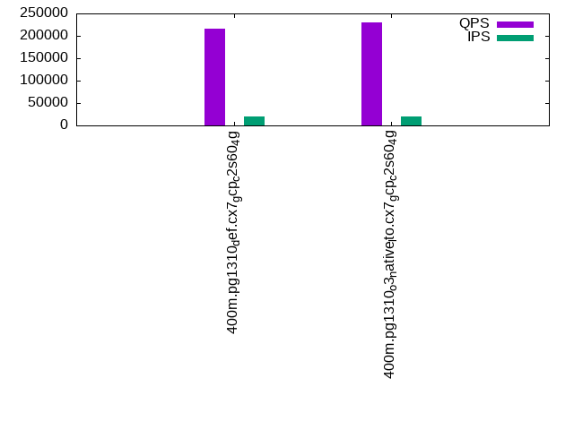

This is a report for the insert benchmark with 400M docs and 20 client(s). It is generated by scripts (bash, awk, sed) and Tufte might not be impressed. An overview of the insert benchmark is here and a short update is here. Below, by DBMS, I mean DBMS+version.config. An example is my8020.c10b40 where my means MySQL, 8020 is version 8.0.20 and c10b40 is the name for the configuration file.
The test server is a c2-standard-60 from GCP with 30 cores, hyperthreading disabled, 240G RAM and 3T from XFS and SW RAID 0 striped over 8 local NVMe drives. The benchmark was run with 20 clients and there were 1 or 2 connections per client (1 for queries, 1 for inserts). The benchmark loads 400M rows without secondary indexes, creates secondary indexes, loads another 400M rows then does 3 read+write tests for one hour each that do queries as fast as possible with 100, 500 and then 1000 writes/second/client concurrent with the queries. Each read-write test runs for 1800 seconds. The test was configured to use one table. The database fits in the OS page cache but not the DBMS buffer pool. Clients and the DBMS share one server. The per-database configs are in the per-database subdirectories here.
The tested DBMS are:
The numbers are inserts/s for l.i0 and l.i1, indexed docs (or rows) /s for l.x and queries/s for q*.2. The values are the average rate over the entire test for inserts (IPS) and queries (QPS). The range of values for IPS and QPS is split into 3 parts: bottom 25%, middle 50%, top 25%. Values in the bottom 25% have a red background, values in the top 25% have a green background and values in the middle have no color. A gray background is used for values that can be ignored because the DBMS did not sustain the target insert rate. Red backgrounds are not used when the minimum value is within 80% of the max value.
| dbms | l.i0 | l.x | l.i1 | q100.1 | q500.1 | q1000.1 |
|---|---|---|---|---|---|---|
| 400m.pg1310_def.cx7_gcp_c2s60_4g | 1092896 | 303796 | 33350 | 189230 | 192301 | 215653 |
| 400m.pg1310_o3_native_lto.cx7_gcp_c2s60_4g | 1101928 | 308243 | 33667 | 200022 | 202718 | 229618 |
This lists the average rate of inserts/s for the tests that do inserts concurrent with queries. For such tests the query rate is listed in the table above. The read+write tests are setup so that the insert rate should match the target rate every second. Cells that are not at least 95% of the target have a red background to indicate a failure to satisfy the target.
| dbms | q100.1 | q500.1 | q1000.1 |
|---|---|---|---|
| pg1310_def.cx7_gcp_c2s60_4g | 1976 | 9885 | 19651 |
| pg1310_o3_native_lto.cx7_gcp_c2s60_4g | 1976 | 9885 | 19672 |
| target | 2000 | 10000 | 20000 |
l.i0: load without secondary indexes. Graphs for performance per 1-second interval are here.
Average throughput:
Insert response time histogram: each cell has the percentage of responses that take <= the time in the header and max is the max response time in seconds. For the max column values in the top 25% of the range have a red background and in the bottom 25% of the range have a green background. The red background is not used when the min value is within 80% of the max value.
| dbms | 256us | 1ms | 4ms | 16ms | 64ms | 256ms | 1s | 4s | 16s | gt | max |
|---|---|---|---|---|---|---|---|---|---|---|---|
| pg1310_def.cx7_gcp_c2s60_4g | 23.405 | 73.424 | 3.100 | 0.027 | 0.029 | 0.014 | 0.001 | 1.169 | |||
| pg1310_o3_native_lto.cx7_gcp_c2s60_4g | 28.161 | 68.546 | 3.218 | 0.029 | 0.031 | 0.014 | 0.001 | 1.307 |
Performance metrics for the DBMS listed above. Some are normalized by throughput, others are not. Legend for results is here.
ips qps rps rmbps wps wmbps rpq rkbpq wpi wkbpi csps cpups cspq cpupq dbgb1 dbgb2 rss maxop p50 p99 tag 1092896 0 189 3.7 2134.8 456.6 0.000 0.003 0.002 0.428 297047 57.5 0.272 16 43.0 112.5 NA 1.169 60962 3896 400m.pg1310_def.cx7_gcp_c2s60_4g 1101928 0 132 3.8 2161.3 466.1 0.000 0.004 0.002 0.433 330578 56.9 0.300 15 43.0 112.5 0.0 1.307 61632 10793 400m.pg1310_o3_native_lto.cx7_gcp_c2s60_4g
l.x: create secondary indexes.
Average throughput:
Performance metrics for the DBMS listed above. Some are normalized by throughput, others are not. Legend for results is here.
ips qps rps rmbps wps wmbps rpq rkbpq wpi wkbpi csps cpups cspq cpupq dbgb1 dbgb2 rss maxop p50 p99 tag 303796 0 1520 43.7 466.9 104.5 0.005 0.147 0.002 0.352 1745 3.4 0.006 3 78.3 147.3 0.0 0.002 NA NA 400m.pg1310_def.cx7_gcp_c2s60_4g 308243 0 1726 42.0 439.0 103.9 0.006 0.139 0.001 0.345 1903 3.4 0.006 3 78.3 147.7 0.0 0.002 NA NA 400m.pg1310_o3_native_lto.cx7_gcp_c2s60_4g
l.i1: continue load after secondary indexes created. Graphs for performance per 1-second interval are here.
Average throughput:
Insert response time histogram: each cell has the percentage of responses that take <= the time in the header and max is the max response time in seconds. For the max column values in the top 25% of the range have a red background and in the bottom 25% of the range have a green background. The red background is not used when the min value is within 80% of the max value.
| dbms | 256us | 1ms | 4ms | 16ms | 64ms | 256ms | 1s | 4s | 16s | gt | max |
|---|---|---|---|---|---|---|---|---|---|---|---|
| pg1310_def.cx7_gcp_c2s60_4g | 0.081 | 5.977 | 88.479 | 5.462 | 0.001 | 0.329 | |||||
| pg1310_o3_native_lto.cx7_gcp_c2s60_4g | 0.209 | 6.256 | 88.214 | 5.320 | 0.001 | 0.650 |
Performance metrics for the DBMS listed above. Some are normalized by throughput, others are not. Legend for results is here.
ips qps rps rmbps wps wmbps rpq rkbpq wpi wkbpi csps cpups cspq cpupq dbgb1 dbgb2 rss maxop p50 p99 tag 33350 0 70838 655.1 60775.1 591.0 2.124 20.114 1.822 18.147 129685 12.8 3.889 115 170.2 239.4 0.0 0.329 1698 749 400m.pg1310_def.cx7_gcp_c2s60_4g 33667 0 70250 656.6 61298.0 596.1 2.087 19.972 1.821 18.131 130376 12.6 3.872 112 170.2 241.6 0.0 0.650 1698 749 400m.pg1310_o3_native_lto.cx7_gcp_c2s60_4g
q100.1: range queries with 100 insert/s per client. Graphs for performance per 1-second interval are here.
Average throughput:
Query response time histogram: each cell has the percentage of responses that take <= the time in the header and max is the max response time in seconds. For max values in the top 25% of the range have a red background and in the bottom 25% of the range have a green background. The red background is not used when the min value is within 80% of the max value.
| dbms | 256us | 1ms | 4ms | 16ms | 64ms | 256ms | 1s | 4s | 16s | gt | max |
|---|---|---|---|---|---|---|---|---|---|---|---|
| pg1310_def.cx7_gcp_c2s60_4g | 99.907 | 0.090 | 0.002 | 0.001 | nonzero | 0.027 | |||||
| pg1310_o3_native_lto.cx7_gcp_c2s60_4g | 99.927 | 0.070 | 0.002 | 0.001 | nonzero | nonzero | 0.230 |
Insert response time histogram: each cell has the percentage of responses that take <= the time in the header and max is the max response time in seconds. For max values in the top 25% of the range have a red background and in the bottom 25% of the range have a green background. The red background is not used when the min value is within 80% of the max value.
| dbms | 256us | 1ms | 4ms | 16ms | 64ms | 256ms | 1s | 4s | 16s | gt | max |
|---|---|---|---|---|---|---|---|---|---|---|---|
| pg1310_def.cx7_gcp_c2s60_4g | 0.485 | 99.464 | 0.026 | 0.025 | 0.636 | ||||||
| pg1310_o3_native_lto.cx7_gcp_c2s60_4g | 0.572 | 99.251 | 0.111 | 0.065 | 0.426 |
Performance metrics for the DBMS listed above. Some are normalized by throughput, others are not. Legend for results is here.
ips qps rps rmbps wps wmbps rpq rkbpq wpi wkbpi csps cpups cspq cpupq dbgb1 dbgb2 rss maxop p50 p99 tag 1976 189230 3984 39.6 4114.7 52.0 0.021 0.214 2.083 26.940 676219 63.0 3.574 100 171.1 217.2 0.0 0.027 9386 9018 400m.pg1310_def.cx7_gcp_c2s60_4g 1976 200022 4026 40.0 4149.8 51.4 0.020 0.205 2.100 26.616 711185 62.7 3.556 94 171.1 219.8 0.0 0.230 9946 9494 400m.pg1310_o3_native_lto.cx7_gcp_c2s60_4g
q500.1: range queries with 500 insert/s per client. Graphs for performance per 1-second interval are here.
Average throughput:
Query response time histogram: each cell has the percentage of responses that take <= the time in the header and max is the max response time in seconds. For max values in the top 25% of the range have a red background and in the bottom 25% of the range have a green background. The red background is not used when the min value is within 80% of the max value.
| dbms | 256us | 1ms | 4ms | 16ms | 64ms | 256ms | 1s | 4s | 16s | gt | max |
|---|---|---|---|---|---|---|---|---|---|---|---|
| pg1310_def.cx7_gcp_c2s60_4g | 99.651 | 0.337 | 0.011 | 0.001 | nonzero | 0.027 | |||||
| pg1310_o3_native_lto.cx7_gcp_c2s60_4g | 99.694 | 0.294 | 0.011 | 0.001 | nonzero | 0.028 |
Insert response time histogram: each cell has the percentage of responses that take <= the time in the header and max is the max response time in seconds. For max values in the top 25% of the range have a red background and in the bottom 25% of the range have a green background. The red background is not used when the min value is within 80% of the max value.
| dbms | 256us | 1ms | 4ms | 16ms | 64ms | 256ms | 1s | 4s | 16s | gt | max |
|---|---|---|---|---|---|---|---|---|---|---|---|
| pg1310_def.cx7_gcp_c2s60_4g | 0.531 | 99.457 | 0.013 | 0.148 | |||||||
| pg1310_o3_native_lto.cx7_gcp_c2s60_4g | 0.563 | 99.417 | 0.020 | 0.152 |
Performance metrics for the DBMS listed above. Some are normalized by throughput, others are not. Legend for results is here.
ips qps rps rmbps wps wmbps rpq rkbpq wpi wkbpi csps cpups cspq cpupq dbgb1 dbgb2 rss maxop p50 p99 tag 9885 192301 18450 186.8 19535.4 208.6 0.096 0.994 1.976 21.613 665046 65.6 3.458 102 176.0 219.6 0.0 0.027 9525 8906 400m.pg1310_def.cx7_gcp_c2s60_4g 9885 202718 18271 186.2 19566.9 209.7 0.090 0.940 1.980 21.721 697248 65.6 3.439 97 176.0 220.0 0.0 0.028 10053 9381 400m.pg1310_o3_native_lto.cx7_gcp_c2s60_4g
q1000.1: range queries with 1000 insert/s per client. Graphs for performance per 1-second interval are here.
Average throughput:
Query response time histogram: each cell has the percentage of responses that take <= the time in the header and max is the max response time in seconds. For max values in the top 25% of the range have a red background and in the bottom 25% of the range have a green background. The red background is not used when the min value is within 80% of the max value.
| dbms | 256us | 1ms | 4ms | 16ms | 64ms | 256ms | 1s | 4s | 16s | gt | max |
|---|---|---|---|---|---|---|---|---|---|---|---|
| pg1310_def.cx7_gcp_c2s60_4g | 99.425 | 0.553 | 0.021 | 0.001 | nonzero | 0.043 | |||||
| pg1310_o3_native_lto.cx7_gcp_c2s60_4g | 99.480 | 0.500 | 0.019 | 0.001 | nonzero | 0.036 |
Insert response time histogram: each cell has the percentage of responses that take <= the time in the header and max is the max response time in seconds. For max values in the top 25% of the range have a red background and in the bottom 25% of the range have a green background. The red background is not used when the min value is within 80% of the max value.
| dbms | 256us | 1ms | 4ms | 16ms | 64ms | 256ms | 1s | 4s | 16s | gt | max |
|---|---|---|---|---|---|---|---|---|---|---|---|
| pg1310_def.cx7_gcp_c2s60_4g | 1.869 | 92.868 | 5.259 | 0.003 | 0.583 | ||||||
| pg1310_o3_native_lto.cx7_gcp_c2s60_4g | 1.965 | 92.903 | 5.131 | 0.001 | 0.506 |
Performance metrics for the DBMS listed above. Some are normalized by throughput, others are not. Legend for results is here.
ips qps rps rmbps wps wmbps rpq rkbpq wpi wkbpi csps cpups cspq cpupq dbgb1 dbgb2 rss maxop p50 p99 tag 19651 215653 37663 381.7 37319.1 401.4 0.175 1.812 1.899 20.919 673174 69.7 3.122 97 189.4 249.8 0.0 0.043 10692 8039 400m.pg1310_def.cx7_gcp_c2s60_4g 19672 229618 38012 384.4 37321.3 400.0 0.166 1.714 1.897 20.822 711809 69.6 3.100 91 189.4 249.9 0.0 0.036 11400 8346 400m.pg1310_o3_native_lto.cx7_gcp_c2s60_4g
l.i0: load without secondary indexes
Performance metrics for all DBMS, not just the ones listed above. Some are normalized by throughput, others are not. Legend for results is here.
ips qps rps rmbps wps wmbps rpq rkbpq wpi wkbpi csps cpups cspq cpupq dbgb1 dbgb2 rss maxop p50 p99 tag 1092896 0 189 3.7 2134.8 456.6 0.000 0.003 0.002 0.428 297047 57.5 0.272 16 43.0 112.5 NA 1.169 60962 3896 400m.pg1310_def.cx7_gcp_c2s60_4g 1101928 0 132 3.8 2161.3 466.1 0.000 0.004 0.002 0.433 330578 56.9 0.300 15 43.0 112.5 0.0 1.307 61632 10793 400m.pg1310_o3_native_lto.cx7_gcp_c2s60_4g
l.x: create secondary indexes
Performance metrics for all DBMS, not just the ones listed above. Some are normalized by throughput, others are not. Legend for results is here.
ips qps rps rmbps wps wmbps rpq rkbpq wpi wkbpi csps cpups cspq cpupq dbgb1 dbgb2 rss maxop p50 p99 tag 303796 0 1520 43.7 466.9 104.5 0.005 0.147 0.002 0.352 1745 3.4 0.006 3 78.3 147.3 0.0 0.002 NA NA 400m.pg1310_def.cx7_gcp_c2s60_4g 308243 0 1726 42.0 439.0 103.9 0.006 0.139 0.001 0.345 1903 3.4 0.006 3 78.3 147.7 0.0 0.002 NA NA 400m.pg1310_o3_native_lto.cx7_gcp_c2s60_4g
l.i1: continue load after secondary indexes created
Performance metrics for all DBMS, not just the ones listed above. Some are normalized by throughput, others are not. Legend for results is here.
ips qps rps rmbps wps wmbps rpq rkbpq wpi wkbpi csps cpups cspq cpupq dbgb1 dbgb2 rss maxop p50 p99 tag 33350 0 70838 655.1 60775.1 591.0 2.124 20.114 1.822 18.147 129685 12.8 3.889 115 170.2 239.4 0.0 0.329 1698 749 400m.pg1310_def.cx7_gcp_c2s60_4g 33667 0 70250 656.6 61298.0 596.1 2.087 19.972 1.821 18.131 130376 12.6 3.872 112 170.2 241.6 0.0 0.650 1698 749 400m.pg1310_o3_native_lto.cx7_gcp_c2s60_4g
q100.1: range queries with 100 insert/s per client
Performance metrics for all DBMS, not just the ones listed above. Some are normalized by throughput, others are not. Legend for results is here.
ips qps rps rmbps wps wmbps rpq rkbpq wpi wkbpi csps cpups cspq cpupq dbgb1 dbgb2 rss maxop p50 p99 tag 1976 189230 3984 39.6 4114.7 52.0 0.021 0.214 2.083 26.940 676219 63.0 3.574 100 171.1 217.2 0.0 0.027 9386 9018 400m.pg1310_def.cx7_gcp_c2s60_4g 1976 200022 4026 40.0 4149.8 51.4 0.020 0.205 2.100 26.616 711185 62.7 3.556 94 171.1 219.8 0.0 0.230 9946 9494 400m.pg1310_o3_native_lto.cx7_gcp_c2s60_4g
q500.1: range queries with 500 insert/s per client
Performance metrics for all DBMS, not just the ones listed above. Some are normalized by throughput, others are not. Legend for results is here.
ips qps rps rmbps wps wmbps rpq rkbpq wpi wkbpi csps cpups cspq cpupq dbgb1 dbgb2 rss maxop p50 p99 tag 9885 192301 18450 186.8 19535.4 208.6 0.096 0.994 1.976 21.613 665046 65.6 3.458 102 176.0 219.6 0.0 0.027 9525 8906 400m.pg1310_def.cx7_gcp_c2s60_4g 9885 202718 18271 186.2 19566.9 209.7 0.090 0.940 1.980 21.721 697248 65.6 3.439 97 176.0 220.0 0.0 0.028 10053 9381 400m.pg1310_o3_native_lto.cx7_gcp_c2s60_4g
q1000.1: range queries with 1000 insert/s per client
Performance metrics for all DBMS, not just the ones listed above. Some are normalized by throughput, others are not. Legend for results is here.
ips qps rps rmbps wps wmbps rpq rkbpq wpi wkbpi csps cpups cspq cpupq dbgb1 dbgb2 rss maxop p50 p99 tag 19651 215653 37663 381.7 37319.1 401.4 0.175 1.812 1.899 20.919 673174 69.7 3.122 97 189.4 249.8 0.0 0.043 10692 8039 400m.pg1310_def.cx7_gcp_c2s60_4g 19672 229618 38012 384.4 37321.3 400.0 0.166 1.714 1.897 20.822 711809 69.6 3.100 91 189.4 249.9 0.0 0.036 11400 8346 400m.pg1310_o3_native_lto.cx7_gcp_c2s60_4g
Insert response time histogram
256us 1ms 4ms 16ms 64ms 256ms 1s 4s 16s gt max tag 0.000 23.405 73.424 3.100 0.027 0.029 0.014 0.001 0.000 0.000 1.169 pg1310_def.cx7_gcp_c2s60_4g 0.000 28.161 68.546 3.218 0.029 0.031 0.014 0.001 0.000 0.000 1.307 pg1310_o3_native_lto.cx7_gcp_c2s60_4g
TODO - determine whether there is data for create index response time
Insert response time histogram
256us 1ms 4ms 16ms 64ms 256ms 1s 4s 16s gt max tag 0.000 0.000 0.081 5.977 88.479 5.462 0.001 0.000 0.000 0.000 0.329 pg1310_def.cx7_gcp_c2s60_4g 0.000 0.000 0.209 6.256 88.214 5.320 0.001 0.000 0.000 0.000 0.650 pg1310_o3_native_lto.cx7_gcp_c2s60_4g
Query response time histogram
256us 1ms 4ms 16ms 64ms 256ms 1s 4s 16s gt max tag 99.907 0.090 0.002 0.001 nonzero 0.000 0.000 0.000 0.000 0.000 0.027 pg1310_def.cx7_gcp_c2s60_4g 99.927 0.070 0.002 0.001 nonzero nonzero 0.000 0.000 0.000 0.000 0.230 pg1310_o3_native_lto.cx7_gcp_c2s60_4g
Insert response time histogram
256us 1ms 4ms 16ms 64ms 256ms 1s 4s 16s gt max tag 0.000 0.000 0.000 0.485 99.464 0.026 0.025 0.000 0.000 0.000 0.636 pg1310_def.cx7_gcp_c2s60_4g 0.000 0.000 0.000 0.572 99.251 0.111 0.065 0.000 0.000 0.000 0.426 pg1310_o3_native_lto.cx7_gcp_c2s60_4g
Query response time histogram
256us 1ms 4ms 16ms 64ms 256ms 1s 4s 16s gt max tag 99.651 0.337 0.011 0.001 nonzero 0.000 0.000 0.000 0.000 0.000 0.027 pg1310_def.cx7_gcp_c2s60_4g 99.694 0.294 0.011 0.001 nonzero 0.000 0.000 0.000 0.000 0.000 0.028 pg1310_o3_native_lto.cx7_gcp_c2s60_4g
Insert response time histogram
256us 1ms 4ms 16ms 64ms 256ms 1s 4s 16s gt max tag 0.000 0.000 0.000 0.531 99.457 0.013 0.000 0.000 0.000 0.000 0.148 pg1310_def.cx7_gcp_c2s60_4g 0.000 0.000 0.000 0.563 99.417 0.020 0.000 0.000 0.000 0.000 0.152 pg1310_o3_native_lto.cx7_gcp_c2s60_4g
Query response time histogram
256us 1ms 4ms 16ms 64ms 256ms 1s 4s 16s gt max tag 99.425 0.553 0.021 0.001 nonzero 0.000 0.000 0.000 0.000 0.000 0.043 pg1310_def.cx7_gcp_c2s60_4g 99.480 0.500 0.019 0.001 nonzero 0.000 0.000 0.000 0.000 0.000 0.036 pg1310_o3_native_lto.cx7_gcp_c2s60_4g
Insert response time histogram
256us 1ms 4ms 16ms 64ms 256ms 1s 4s 16s gt max tag 0.000 0.000 0.000 1.869 92.868 5.259 0.003 0.000 0.000 0.000 0.583 pg1310_def.cx7_gcp_c2s60_4g 0.000 0.000 0.000 1.965 92.903 5.131 0.001 0.000 0.000 0.000 0.506 pg1310_o3_native_lto.cx7_gcp_c2s60_4g